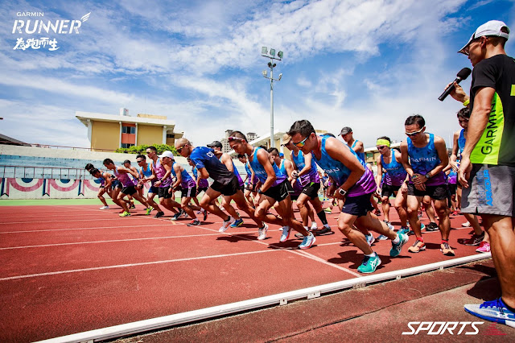

致 2017 Garmin PB 班的學員：關於跑者的「力量」訓練
這次上課時有提到我們可以把身體移動時的力量(force)分為：「內力」(Internal Force)和「外力」(External Force)兩種。在一個力學系統內部相互作用的力叫「內力」，比如說人體這個系統中肌力屬於內力，它需要身體的能量；而外力則不需要身體的能量。這兩種力，還有一個最大的差別，就是它們所造成的效果：內力無法移動物體(身體)，只有外力可以。
不管任何運動，四肢的動作都只是內力。比如說我們在太空中，不管四肢如何用力，只能移動肢體或轉動，而無法移動質心分毫。除非有另一位太空人從旁推你一下(外部力量)，移動才會發生。
以跑步這項運動來說，我們之所以會前進是因為身體的重心跑到支撐腳的前方，所以失去平衡才會向前移動，身體向前移動的力量來源是「重力」這個外力。
重力，是最原始的外力來源。沒有它，我們無法移動。在月球上，重力只剩下地球的六分之一，所以跑步的加速度也會變慢。

【圖】從上圖中起跑的第一步可以看得出來，身體的肌肉只在支撐體重與改變身體的姿勢，讓身體失去平衡，向前落下……接著下一個動作是後腳「拉起」，回到關鍵跑姿支撐體重，再向前落下，一再循環。
—
「外力」與「內力」這兩者之間的重要性不言可喻，但目前的跑步理論中似乎都忽略了這點。過去從來沒有人仔細解釋過這些力量在跑步時如何在一個系統中互相作用，以及如何推動人體向前。德高望重的俄羅斯運動生理學家伯恩斯坦教授(Bernstein)曾提出一項通則：「當我們的身體在同樣的運動表現下能運用更多的外力，(肌肉)主動作功愈小，移動的效率與經濟性自然愈高。」(這句話出自：Bernstein, N. On constructing movement. Medgiz, Moscow, 1947, p.31. )
當我們談「技巧」時，這條通則很好用，大家也應該都能接受，但過去仍沒有人明確地解釋這些不同的力量如何在同一個系統中「互相作用」。 …過去從來沒有比現在這個時代更強調肌肉對運動表現的幫助。大多數人都認為運動時肌肉負責所有的工作，因此擁有更強更壯的肌肉就能表現得更好和跑得更快，像是類固醇和某些可以讓肌肉長大的禁藥更是強化了這樣的觀點。
肌力當然有助於運動表現，只是大多數人都誤解了它的功能。從上面的論述可知，肌力只是內力。肌肉的主要用力方式是「收縮」，當它伸展時大都屬於放鬆狀態。雖然肌力這種內力並不是推動身體前進的主要力量，但它在跑步時當然很重要，有三種主要的任務：
- 第一種：支撐體重。速度愈快，腳掌落地的體重也會愈重，慢跑是一點五倍體重，衝刺時會高達三倍體重。
- 第二種：穩定姿勢，例如在高步頻下要維持上半身挺直(Run Tall)的姿勢，不使軀幹向前傾。
- 第三種：轉換支撐。快速把後腳拉回臀部下方，才能形成下一個支撐點。
像 ACSM 與 NSCA 的教科書，都把"Strength"翻譯為「肌力」，所以許多訓練都圍繞在肌肉力量上，但愈深入研究菁英跑者的訓練方式之後，發現很多時候他/她們不只是在練肌力，而是在練肌肉以外的力，像結締組織的彈力(elasticity)與使用重力(gravity)的能力。所以我在今年 PB 班才會把跑者的「肌力訓練」改稱為「力量訓練」。
「力量」下面包含了「肌肉力量(肌力)」、「非肌肉組織的力量」與身體以外的力量。也就是說除了肌肉之外，肌腱、筋膜等結締組織會有彈力，以及外部的重力。
像舉重這種要負擔額外更多體重的運動就需要更強的「肌力」才辦得到；但在只有自身體重移動項目中，則更需要「彈力」這等能加速離開體重的「力量」。當然，耐力運動還是需要負重的「肌力」訓練，因為在長時間承擔自身體重的運動過程中，若具有較大的最大肌力，肌耐力也會跟著變好是不變的事實。只是不用承擔多餘體重的運動應該把力量訓練的重點從肌力轉移到彈力上(也就是運用體重與失重的能力)。這不是非 A 即 B 的選擇題，而是比例的問題。像美式足球會有跟其他對手的碰撞，碰撞時必須承擔對手的體重，此時就要有足夠的「肌力」才能撐得住，不然就會被撞倒，所以「肌力」就顯得相當重要。
反觀耐力運動，不需要碰撞，也很少需要承擔自身體重之外的體重，所以「彈力」會比「肌力」重要。但耐力運動中的跑步和自行車之間又有差異存在……雖然都是單腳承擔自身體重的運動，但車手受限於自行車的設計是用類似坐姿單腳站立的姿勢在支撐體重，所以肌肉上的槓桿壓力比跑步大很多，比較起來，自行車對下肢負重「肌力」訓練的比例就需要比跑步大。也就是說，車手不太需要肌腱與結締組織的「彈力」訓練。
--
我很喜歡好朋友山姆曾經分享過達文西的一段話：
Simplicity is the ultimate sophistication.
(簡單是細膩的極致)。
山姆說：「我們應該花更多時間在已經會的東西上，然後更深入去研究。……我後來就不再一味地只看運動科學的文獻了，反而喜歡 MBSC 的東西……很多人都認為教練就應該會教會『複雜』的東西及動作，但我都覺得，我們應該了解什麼才是『重要』的動作，然後『簡化』後教會給客人。」
我個人非常認同這樣的觀念，甚至認為「簡化」的過程(也就是鑽研事物的本質)才是困難所在，這次 PB 班中我把非關體能與技術的訓練統稱為「力量訓練」，再把這種訓練的理論簡化成下面六組動作：
雙腳彈跳
https://youtu.be/1BCTNsxmMoc
穩定動作
https://youtu.be/6DgupjBzEiQ
上拉動作
https://youtu.be/XyymWIg_UOs
上肢動作
https://youtu.be/oKx1Prawq6g
臀部動作
https://youtu.be/Qi0tOZPYMD4
單腳彈跳
https://youtu.be/H6Bsj_WISdo
—
在尋找不變的本質與簡化的過程中，特別感謝我的老師羅曼諾夫博士(Dr. Romanov)的著作與指導，才能使我在研究跑步訓練理論與訓練法的方向愈來愈明確。
國峰